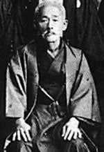

Kanryo Higaonna was born in Naha, Okinawa in 1853, he was one of eight children. His father made his living trading firewood between the local islands. Kanryo Sensei helped his father from the age of ten, and the hard work made him very strong. From childhood Kanryo Higaonna showed great interest in the fighting arts and was eager to learn as much as possible. By all accounts he was known for being very supple and quick on his feet, despite his small size.
At age fourteen Kanryo Higaonna began to learn Chinese Kempo. His well developed and strong body enabled him to master Chinese Kempo and he quickly built a reputation as a martial artist master in Naha. Unsatisfied with his level of skill, Kanryo Higaonna longed to go to China to study the Chinese martial arts and their culture.
As chance would have it, Higaonna Sensei's instructor introduced him to Udon Yoshimura, a ship-owner in the port city of Naha. It was Udon Yoshimura who eventually sponsored Higaonna Sensei's passage to China. At the age of sixteen, he left Naha for the Chinese port of Foochow where he stayed at the Okinawan settlement called the Ryukyu-kan.
It took almost a year for Higaonna Sensei to be introduced to the local master of Chinese Kempo in Foochow, Master Ryu Ryuko. Even after Higaonna Sensei was introduced, he was not immediately accepted as a disciple. The Chinese masters would take the time to study the personality and character of candidates before accepting any disciples. Thus, Higaonna Sensei was given tasks of tending the garden and cleaning the rooms of the master and did these tasks earnestly and enthusiastically over a long period of time. Impressed by his attitude, Master Ryu Ryuko finally accepted Higaonna Sensei as his personal disciple.
Higaonna Sensei stayed as a disciple in Foochow for about thirteen years, after which he returned to Okinawa. Higaonna Sensei visited the owner of the ship, Udon Yoshimura, who had made his passage to China possible. Udon Yoshimura asked Higaonna Sensei to teach his sons some of the skills he had learned in China.
Higaonna Sensei's fame spread rapidly throughout Naha, attracting the attention of the King of the Ryukyu Dynasty. Thus for many years, he taught the martial arts to the members of the royal family as well. On a few separate occasions, Hisataka Kori had the opportunity to meet and train with Higaonna. In one particular instance, Higaonna and Hisataka participated in match (sparring), which ended in a draw. It must be stated that at this time, Higaonna was in his late sixties, and Hisataka was 14 years old.